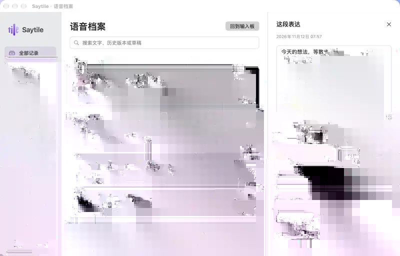

AI 语音板，专为 Mac
让每句话，准确留下。
你自然开口。Saytile 持续听写、核对，
让留下的文字，忠实于你。
先别急着下结论。
等你下一句。
中文优先 · Apple Silicon · 产品交互演示
01 持续表达
停顿，不是结束。
开启自由记录后，Saytile 持续待命。
说完一句，它安静下来；再次开口，
文字仍在同一份表达里继续。
收起输入板≠停止收音
只有明确暂停，才会停止采集。
短暂停顿回到待命；记录不会因此结束。
状态说明为交互示意 · 不访问麦克风
02 自由记录 / 直接输入
一份文字，
两种取用方式。
先自然表达。
文字留在 Saytile，或进入你明确选定的草稿。
由你决定它去哪里。
SAYTILE / 同一份文字
把刚想到的内容，先完整说出来。
连续记录 · 可编辑
自由记录
留在输入板
文字先留在输入板；你可以编辑、复制，或在需要时单次插入到草稿。
编辑复制单次插入
↳文字始终由你决定何时、去往哪里。
工作方式示意 · 不连接外部应用，不会发送消息
03 语音档案
每段表达，
都能找回。
按讲话段落整理。
搜索文字与历史版本，回听原音，
编辑、重新识别，再带回输入板。
- 01 搜索文字与历史版本
- 02 修改自动暂存，版本可以回看
- 03 原音回听与重新识别
原音可以单独删除。文字与修改稿仍然保留。


第一次使用，需要准备什么？
当前内测提供本地中文识别，无需 API Key。首次使用需要准备语言资源，并授予麦克风权限。你也可以在设置里配置支持的云端服务。
在哪里获取当前版本？
当前界面仍在内测。通过 GitHub 内测进展 查看最新状态与后续发行；公开 Releases 中的 RC1 是较早版本。